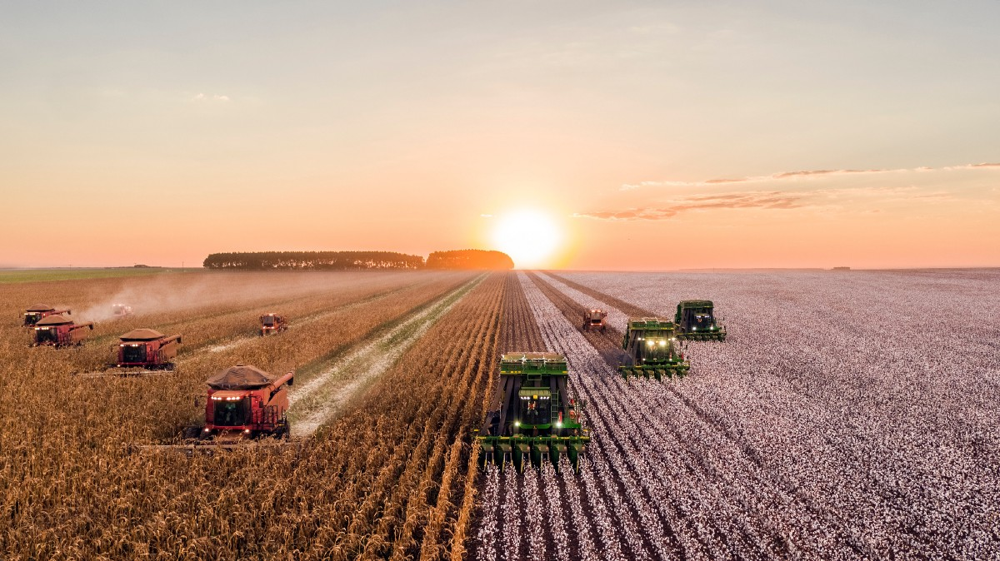

Industrial Farming
Industrial
agriculture is a form of modern farming that refers to the industrialized production of crops and
animals and animal products like eggs or milk. The methods of industrial agriculture include
innovation in agricultural machinery and farming methods, genetic technology, techniques for
achieving economies of scale in production, the creation of new markets for consumption, the
application of patent protection to genetic information, and global trade. These methods are
widespread in developed nations and increasingly prevalent worldwide. Most of the meat, dairy, eggs,
fruits, and vegetables available in supermarkets are produced in this way.
History
Industrial agriculture arose hand in hand with the Industrial Revolution in general. The
identification of nitrogen, potassium, and phosphorus (referred to by the acronym NPK) as critical
factors in plant growth led to the manufacture of synthetic fertilizers, making possible more
intensive types of agriculture. The discovery of vitamins and their role in animal nutrition, in the
first two decades of the 20th century, led to vitamin supplements, which in the 1920s allowed
certain livestock to be raised indoors, reducing their exposure to adverse natural elements. The
discovery of antibiotics and vaccines facilitated raising livestock in concentrated, controlled
animal feed operations by reducing diseases caused by crowding. Chemicals developed for use in World
War II gave rise to synthetic pesticides. Developments in shipping networks and technology have made
long-distance distribution of agricultural produce feasible.